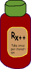

Antwort:
Die schnellste Methode sollte links stehen, da Sie sofort fertig sind, wenn sie false zurückgibt. Sie brauchen dann nicht die Methode ausführen, die Stunden benötigt.
if ( beiMirGehtDasSchnell() && meineAuswertungDauertStunden() ) ....
Die schnellste Methode sollte links stehen, da Sie sofort fertig sind, wenn sie false zurückgibt. Sie brauchen dann nicht die Methode ausführen, die Stunden benötigt.
if ( beiMirGehtDasSchnell() && meineAuswertungDauertStunden() ) ....

Wenn die erste Methode false zurückgibt, wird die zweite Methode erst gar nicht ausgewertet und spart Zeit. Das Ergebnis der Auswertung des Boole'schen Ausdrucks ist false, immer wenn die Methode beiMirGehtDasSchnell() false ist. Nur wenn sie true ist, wird die zeitraubende Methode ausgeführt.
Achtung: Dieser "Trick" funktioniert nur dann korrekt, wenn die ausgelassene Methode nichts Permanentes tut. Mit anderen Worten, Short-Circuit-Auswertung ist nur dann sicher, wenn die ausgelassene Methode nichts anderes tut als true oder false zu berechnen.
Short-Circuit-Auswertung ist nicht sicher, wenn die ausgelassene Methode mehr als das tut. Zum Beispiel:
boolean meineAuswertungDauertStunden()
{
// mache eine permanente Änderung eines Objekts, das
// im weiteren Programm verwendet wird
// jetzt gib ein true oder false zurück
}
Wenn eine Methode eine permanente Änderung an Daten vornimmt, muss sie unabhängig von dem true/false-Wert der anderen Methode aufgerufen werden. Wenn eine Methode eine permanente Änderung an Daten vornimmt, dann sagt man von der Methode, dass sie einen Seiteneffekt hat. Sie müssen vorsichtig sein, wenn Sie einen Short-Circuit Operator verwenden.